Ⅰ 本课目标Objectives
- 01对照官方清单清点随机配件，确认机身、电池、肩带与充电器齐全
- 02在机身上逐一指出常用按键、拨盘与插孔，并说出各自的作用
- 03独立完成肩带 / 镜头 / 电池 / 存储卡装配、充电与首次开机设置
- 机身 X-S20
- NP-W235 电池
- SD / SDHC / SDXC 卡
- AC-5VJ 电源适配器
- USB-C 线
Ⅱ 开箱清点Accessories
官方随机配件共 8 件。开箱后逐件核对，确认无缺件、无损坏后再处理包装。若你购买的是镜头套装，包装内另有一支镜头。
- NP-W235 可充电电池
- AC-5VJ 交流电源适配器
- 插头适配器（因地区而异）
- USB 线（约 0.6 m）
- 机身盖（出厂已装在机身上）
- 肩带
- 散热器接头盖（出厂已装好）
- 基本操作手册
注意
出厂时电池未充电，不充电相机无法工作——第 05 步先充电。插头适配器专用于 AC-5VJ 适配器，不要拿去充其他设备。
Ⅲ 机身导览Body Tour
先看两张官方部件总览图建立整体印象，再用下方的部件浏览器逐个认识重点操控部件——点击部件名称，右侧会显示官方细节图与说明。
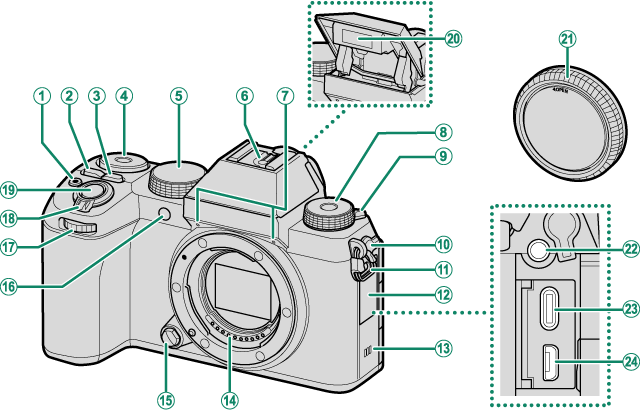
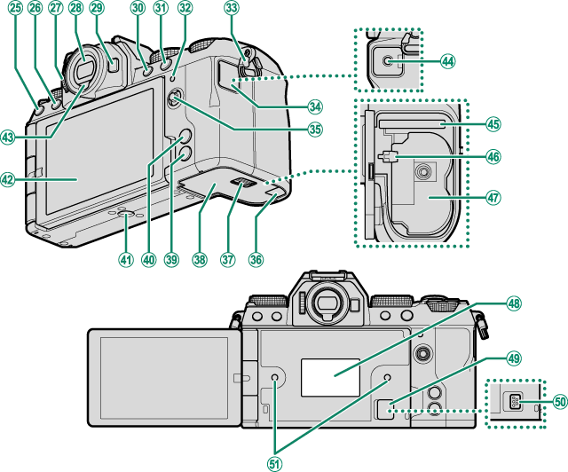
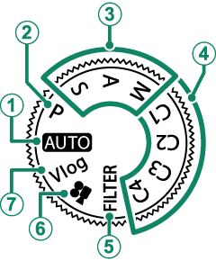
模式拨盘 旋转拨盘使所需模式的图标与标记对齐。档位依次为：AUTO（场景自动）、P（程序 AE）、S（快门优先）、A（光圈优先）、M（手动）、C1–C4（自定义 1–4，存你自己的参数组）、FILTER（滤镜）、动画、Vlog。拍摄模式的深入讲解在第 3 课。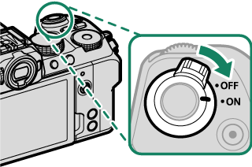
快门按钮与 ON/OFF 开关 环绕快门按钮的拨杆就是电源开关：拨到 ON 开机、OFF 关机。半按快门 = 对焦并测光；全按 = 释放快门拍摄。相机自动关机后，半按快门即可唤醒。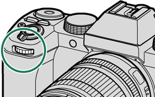
前指令拨盘 拍摄时：S 档选择快门速度，A / M 档调整光圈（若镜头无光圈环则两个拨盘分别控制），P 档做程序切换，AUTO 档选择场景模式。菜单里：选择菜单选项卡或翻阅菜单。回放里：切换照片。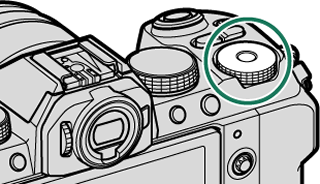
后指令拨盘 与前指令拨盘配合控制曝光参数；菜单里用于上下移动高亮项目，Q 菜单里切换设定项。两个指令拨盘承担的功能可在「按钮/拨盘设置 > 命令转盘设定」中自定义（第 8 课）。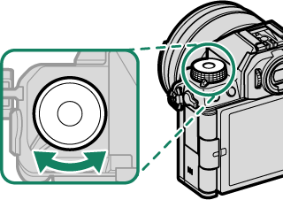
Fn（功能）拨盘 富士特色的功能拨盘：旋转即可快速调整指定功能。出厂默认在 P/S/A/M、AUTO、动画、Vlog、C1–C4 模式下切换胶片模拟，在 FILTER 模式下选择滤镜。可在「按钮/拨盘设置 > 功能(Fn)设定」中改指派为其他功能。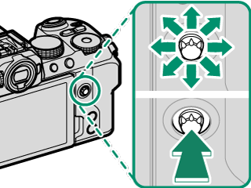
对焦棒（对焦杆） 倾斜或按下即可选择对焦区域，也用于操作菜单（左右切选项卡、上下选项目）。按住中央可锁定。它执行的功能可在「按钮/拨盘设置 > 对焦杆设置」中选择。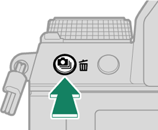
（驱动）按钮 按下即显示驱动模式菜单：单幅画面、高速连拍、低速连拍、ISO BKT、白平衡 BKT、包围、HDR、全景、多重曝光。风光最常用的包围 / HDR / 全景都在这里，第 5 课细讲。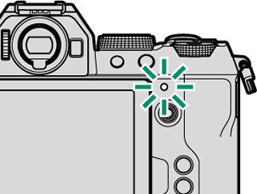
指示灯 用颜色和闪烁方式表达相机状态：绿色 = 对焦锁定；闪烁绿 = 对焦或低速快门警告；点亮橙 = 正在写卡（此时无法继续拍摄）；闪烁橙 = 闪光灯充电中；闪烁红 = 镜头或存储介质错误。眼睛贴近取景器时指示灯保持熄灭。完整状态见下表。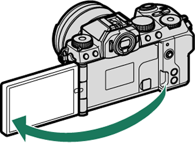
多方向 LCD 显示屏 构图时可调整屏幕角度（风光低机位、Vlog 自拍都靠它），注意不要夹到手指，旋转时勿对铰链过度用力，也别让屏幕四角磕到机身留下痕迹。屏幕同时是触摸屏，见第 Ⅴ 节。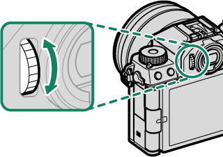
屈光度调节控制器 若取景器（EVF）里的显示信息模糊，把眼睛贴近取景器，旋转屈光度调节控制器直至清晰——戴眼镜或不戴眼镜的屈光度不同，换人使用时记得重新调整。附 指示灯状态速查
| 指示灯 | 相机状态 |
|---|---|
| 点亮绿色 | 对焦锁定。 |
| 闪烁绿色 | 对焦或低速快门警告，此时仍可拍摄。 |
| 闪烁绿色及橙色 | 正在记录照片或拍摄后回放确认；相机关闭时则表示正在向手机上传照片。 |
| 点亮橙色 | 正在记录照片，此时无法继续拍摄。 |
| 闪烁橙色 | 闪光灯正在充电，拍摄照片时不会闪光。 |
| 闪烁红色 | 镜头或存储介质错误。 |
Ⅳ 相机显示Displays
拍摄时屏幕与取景器会显示大量指示。不用一次记全——先认得下面这些最常见的，其余在后续课程用到时自然会记住。按 DISP/BACK 按钮可循环切换显示模式、调整亮度或旋转显示方向。
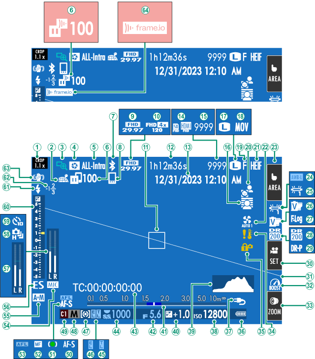
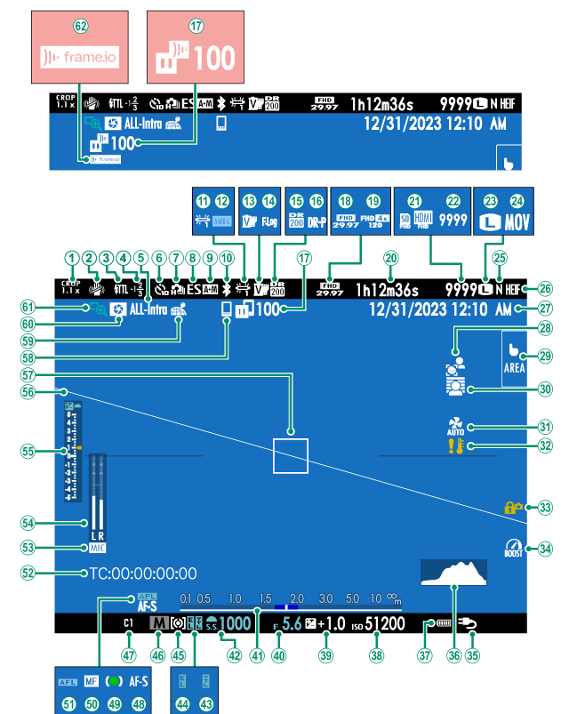
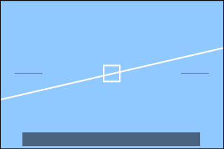
Ⅴ 使用菜单与触摸屏Menu & Touch
按下 MENU/OK 按钮显示菜单。菜单分三种：拍摄静态照片时是照片菜单，动画 / Vlog 模式下是动画菜单，回放时是回放菜单。导航动作全靠对焦棒与两个指令拨盘：
- 01向左按下对焦棒：高亮显示当前菜单的选项卡
- 02向上 / 向下按下对焦棒：切换到所需项目的选项卡
- 03向右按下对焦棒：光标进入菜单；前指令拨盘翻页，后指令拨盘移动高亮
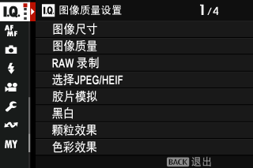
LCD 显示屏同时是触摸屏。轻触画面中的触摸屏模式指示即可切换触控行为：
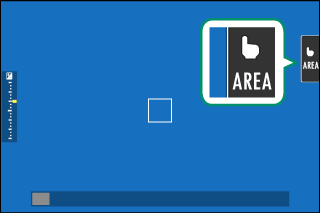
| 模式 | 说明 |
|---|---|
| 触控拍摄 | 轻触拍摄对象即对焦并释放快门；连拍模式下手指保持接触期间持续拍摄。 |
| AF / AF OFF | 轻触仅对焦不拍摄；对焦后锁定，轻触 AF OFF 图标解除。MF 模式下轻触可用自动对焦对准所选对象。 |
| 区域 | 轻触选择对焦点，对焦框移至所选位置。 |
| 关闭 | 触摸屏功能关闭。 |
提示
若要彻底禁用触控并隐藏指示：按钮/拨盘设置 > 触摸屏设置 > 触摸屏设置 选为「关」。用 EVF 构图时，LCD 还可以当作触控板来选对焦区域（EVF 触摸屏区域设置）。
Ⅵ 操作步骤Steps
对照手边的相机逐步完成，每完成一步勾选一次。首次通电前的所有准备都在这 9 步里。
Ⅶ 迁移提示From Sony / Canon
从索尼 / 佳能换到 X-S20，先知道这 5 件事
- 曝光操作重排：参数主要在前 / 后指令拨盘与镜头光圈环上完成，ISO 有独立按钮——不再是「前后拨盘 + 屏幕下沿数值」的单一路径。
- 模式拨盘更「重」：除 P/S/A/M 外还有 C1–C4 四个自定义注册档（≈ 佳能 C 档 / 索尼 MR 回调）、FILTER 滤镜档和 Vlog 档，第 6、8 课教你注册自己的参数组。
- Fn 拨盘是富士特色：出厂默认就是「胶片模拟拨盘」，等于把富士的色彩预设做成了物理操控，第 6 课展开。
- Q 按钮 ≈ 索尼 Fn 菜单 / 佳能速控屏幕：快速改常用参数；更深的设置走 MENU/OK + 对焦棒。
- DISP/BACK 循环切换显示信息：直方图、水平线等都可以调出来（直方图第 2 课细讲）。
Ⅷ 课后练习Exercise
-
01
看图指认：在第 Ⅲ 节的机身导览中找到模式拨盘、对焦棒、Q 按钮、Fn 拨盘，并各用一句话说出它们的作用。
参考答案
模式拨盘：选择拍摄模式（AUTO/P/S/A/M、C1–C4、FILTER、动画、Vlog）；对焦棒：选择对焦区域并导航菜单；Q 按钮：呼出快速菜单改常用参数；Fn 拨盘：旋转快速调整指定功能（出厂默认切胶片模拟）。
-
02
判断：给电池充电时，指示灯闪烁表示电池已经充满。
参考答案
错误。闪烁表示充电错误；熄灭才是充满，常亮表示充电中。
-
03
简答：一张新的存储卡插入相机后，第一件事应该做什么？
参考答案
在相机中格式化存储卡（会清除全部数据，先确认卡内没有要保留的内容）。
Ⅸ 出处与延伸Sources
- 本课对应的官方说明书页面（主教材）
- 菜单列表 · 附带配件 · 查看本手册 — 开箱清点依据
- 相机部件 — 机身导览、模式拨盘、Fn 拨盘、指示灯表
- 相机显示 — 显示指示与虚拟水平线
- 使用菜单 · 触摸屏模式 — 菜单导航与触控操作
- 安装肩带 · 安装镜头 · 插入电池和存储卡 — 装配步骤
- 电池充电 · 开启与关闭相机 · 检查电池电量 · 基本设置 — 通电与首次设置
- 版权说明
- 本课插图均取自 FUJIFILM 官方在线说明书，© FUJIFILM Corporation，仅用于个人学习。
学习提醒
课程有不清楚的地方、或装配时遇到任何问题，随时问我。下一课将跑通「拍第一张照片 → 回放 → 删除」的完整流程。